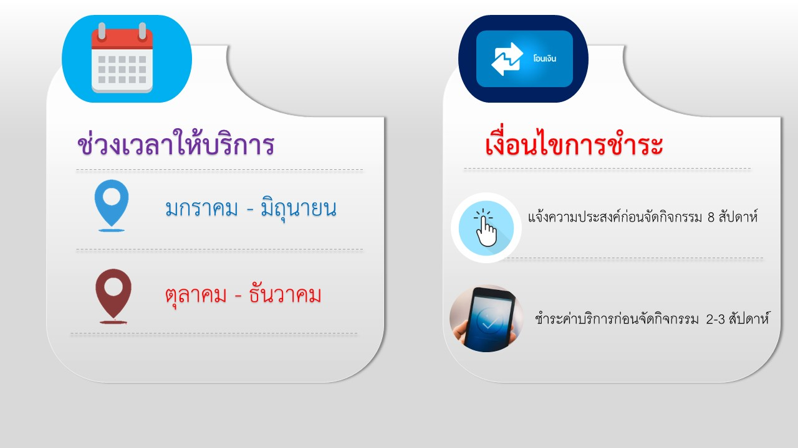

คณะวิทยาศาสตร์ มหาวิทยาลัยทักษิณ มีการให้บริการวิชาการแก่ชุมชน ส่วนราชการ องค์การ รัฐวิสาหกิจ และสถานศึกษาทั้งภาครัฐ และภาคเอกชน โดยอาศัยองค์ความรู้และความเชี่ยวชาญทางวิชาการเพื่อส่งเสริมให้เกิดประสบการณ์ทางด้านวิทยาศาสตร์และเทคโนโลยี ซึ่งเป็นลักษณะการบริการวิชาการ โดยยึดตามระเบียบมหาวิทยาลัยทักษิณ ว่าด้วย การให้บริการวิชาการ พ.ศ.2559
1.การให้บริการสำหรับสถานศึกษา เช่น การจัดค่ายปฏิบัติการทางด้านวิทยาศสตร์ การจัดค่ายเทคนิคปฏิบัติการเบื้องต้นทางด้านเคมี จุลชีววิทยา ฟิสิกส์ ชีววิทยา ค่ายปฏิบัติด้านพืช เป็นต้น
2.การให้บริการเครื่องมือหรืออุปกรณ์ทางด้านวิทยาศาสตร์ เช่น การใช้ห้องปฏิบัติการด้านวิทยาศาสตร์ การใช้เครื่องมือทางด้านเคมี จุลชีววิทยา ฟิสิกส์ เป็นต้น
3.ค่่ายปฏิบัติการเบื้องต้นด้านฟิสิกส์ เช่น เสียงและแสง การต่อวงจรอีเล็กทรอนิกส์ แรงและการเคลื่อนที่ การตกอิสระ เลนส์นูนและเลนส์เว้า สมดุลแรง มัลติมิเตอร์และวงจรไฟฟ้า การสร้างหุ่นยนต์เบื้องต้นสำหรับนักเรียน ดาราศาสตร์ การใช้กล้องดูดาว เป็นต้น
4.การอบรมให้ความรู้ด้านคณิตศาสตร์ เช่น ทักษะการเรียนคณิตศาสตร์และการแก้ปัญหาทางคณิตศาสตร์ ทักษะการแก้โจทย์ปัญหาทาง Matrix , Function ความงามทางคณิตศาสตร์ จำนวนจริง วงกลมและเรขาคณิต กิจกรรมจุดประกายความคิดด้านงานวิจัยทางคณิตศาสตร์และฝึกปฏิบัติการเขียนเค้าโครงงานวิจัยสำหรับนักเรียน การใช้โปรแกรม GSP สำหรับนักเรียนระดับมัธยมศึกษาตอนต้น
ช่วงที่ 1 เดือนมกราคม - เดือนมิถุนายน
ช่วงที่ 2 เดือนตุลาคม - เดือนธันวาคม
1.แจ้งความประสงค์ล่วงหน้าก่อนจัดกิจกรรม 8 สัปดาห์
2.โอนชำระค่าบริการล่วงหน้าก่อนจัดกิจกรรม 2-3 สัปดาห์
หมายเหตุ : หลังจากผู้ให้บริการและผู้รับบริการ ได้ตกลงร่วมกันเรียบร้อยแล้ว

ติดต่อจัดค่าย : งานบริการวิชาการและจัดหารายได้
เจ้าหน้าที่ : นางสาวอัจฉรา ขุนลึก โทรศัพท์ 074-609600 ต่อ 2109 หรือ 095-4387159
E-mail : atchara@tsu.ac.th